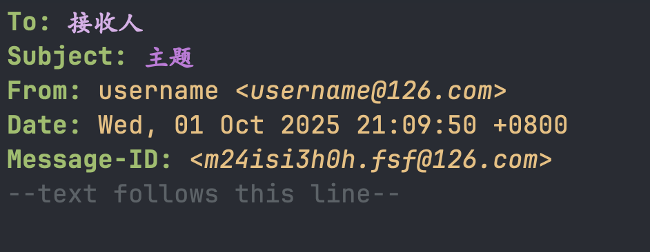

前言
上一篇文章讲了如何在 Emacs 中接收 126 邮件，今天来说一下如何发送邮件。
配置
发送邮件还是比较简单的，只要接收没问题，发送基本上也不会有太大的问题。
发送邮件主要就在 Emacs 中配置就行了，如下所示
1
2
3
4
5
6
7
8
9
10
11
12
13
|
(setq mu4e-sent-messages-behavior 'sent
message-send-mail-function 'smtpmail-send-it
user-mail-address "username@126.com"
mu4e-compose-format-flowed t
smtpmail-queue-dir "~/Mail/126/queue/cur"
smtpmail-smtp-user "username@126.com"
smtpmail-stream-type 'ssl
smtpmail-starttls-credentials '("smtp.126.com" 465 nil nil)
smtpmail-auth-credentials '("smtp.126.com" 465 "username@126.com" nil)
smtpmail-smtp-server "smtp.126.com"
smtpmail-smtp-service 465
smtpmail-debug-info t
smtpmail-debug-verbose t)
|
需要把邮件地址换成自己的。
配置 auth-source
由于我使用 pass 来管理授权码，所以需要配置把 pass 也加入到 auth-source 中，这样发送邮件的时候才知道从哪里去找授权码。
1
2
3
4
5
|
(use-package auth-source-pass
:ensure nil
:init
(setq auth-source-debug t)
(auth-source-pass-enable))
|
如果不使用 pass 需要使用 .authinfo 添加密码，格式如下
1
|
machine smtp.126.com login username@126.com password 这里换成授权码
|
这样其实不安全，最好使用 GPG 进行加密。
发送邮件
配置好了之后，使用 M-x mu4e 启动邮件客户端，按下 C(大写) 新建邮件。

这里需要在 To: 这行填写接收人， Subject: 填写主题， From: 就是你自己了。
在 --text follows this line-- 下面就是邮件正文了。
写好之后使用 C-c C-c 发送邮件。
参考